End-to-end Learning of Action Detection from Frame Glimpses in Videos [2016 CVPR]
视频动作检测任务中的第一个端到端方法。
该模型有一个基于递归神经网络的agent，它随着时间的推移与视频交互。agent观察固定比例的视频帧，并决定下一步在哪里看以及何时发出预测。
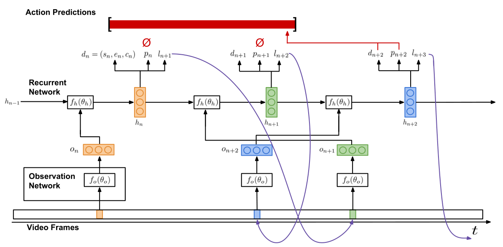
总体流程
在某一步n中，agent观察橙色视频帧并产生3个输出：$(d_n, p_n, l_{n+1})$，分别表示（候选检测结果，预测指标，下一处观察位置）。其中，预测指标$p_n$输出“是”或“否”，指示$d_n$可否被作为一个预测结果被提交；候选检测结果$d_n$包括$(s_n, e_n, c_n)$，分别表示正则化开始、结束位置和该候选的置信度。
在上图中，$p_n$输出“否”，因此不被动作预测集接受。同时agent在n+1步中移动到$l_{n+1}$的位置，即绿色视频帧的位置，并继续产生3个输出：$(d_{n+1}, p_{n+1}, l_{n+2})$。此时$p_{n+1}$仍不被接受，因此agent在n+2步中移动到$l_{n+2}$的位置，即蓝色视频帧的位置。这次的$p_{n+2}$被接受，因此将该候选结果输入到动作预测集，同时agent继续下一步。
主要包含两个网络：
观察网络$f_o$对视频帧的视觉表示进行编码；循环网络$f_h$依次处理这些观察，并决定下一步观察哪个帧以及何时发出预测。
观察网络$f_o$
将视频帧中观察到的地点和内容编码为特征向量$O_n$ （通过卷积、池化、全连接等操作）。
输入：归一化处理后的时序位置。论文中使用VGG16。输出：特征向量$O_n$ 。
循环网络$f_h$
是agent的核心模块。
输入：特征向量$O_n$ 。输出：网络的隐藏状态$h_n$，它是$O_n$和前一隐藏状态$h_{n-1}$的函数，用来模拟动作实例的时间假设。
训练
使用反向传播训练$d_n$，使用REINFORCE训练$p_n$和$l_{n+1}$。
优点
只需要观察很少数的视频帧（2%甚至更少）
(SSAD)Single Shot Temporal Action Detection [2017 ACM Multimedia]
特征提取
使用了双流网络和C3D网络来提取特征。拼接3个网络的最后一层（该层输出即代表输入snippet对应的每个动作的概率）输出作为后续使用的特征，该特征记作SAS（Snippet Action Score）特征。最终，对于一个包含T 帧图像的视频，我们可以得到等长的SAS特征序列。该特征序列实际上就是一个二维的矩阵。

SSAD模型
输入：长度为T的特征序列。
SSAD模型是一个全部由时序卷积（一维卷积）构成的网络。主要包括三种卷积层：base, anchor, prediction layer。
Base Layers：缩短特征序列的长度，并增大特征序列中每个位置的感受野。
Anchor Layers ：继续缩小特征序列的长度，每层anchor layer输出的特征序列都被关联了多个尺度的anchor instances（类似SSD中的default box和faster RCNN中的anchor）。
Prediction Layers：获取每个anchor instances所对应的 坐标偏移量，重叠置信度，以及类别分类结果。
通过多层时间尺度不断缩小的特征序列，SSAD模型可以获得由小到大各个时间尺度的action instance预测。
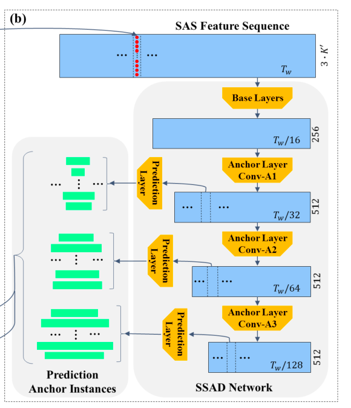
(SS-TAD)End-to-End, Single-Stream Temporal Action Detection in Untrimmed Videos [2017 BMVC]
模型由三个主要部分组成:输入视觉编码、两个循环记忆模块和最终输出。

视觉编码器：
用C3D网络从输入的视频帧中获取较低层次的时空视觉信息。
将总长为L帧的视频分成T个不重叠的时间步，每个时间步内含有δ帧。每个时间步都进行视觉编码，得到φ。如上图。
语义约束的循环记忆模块：
有选择地聚合相关上下文。每个记忆模块包含了多层门控循环单元( gated recurrent unit， GRU)。如下图。
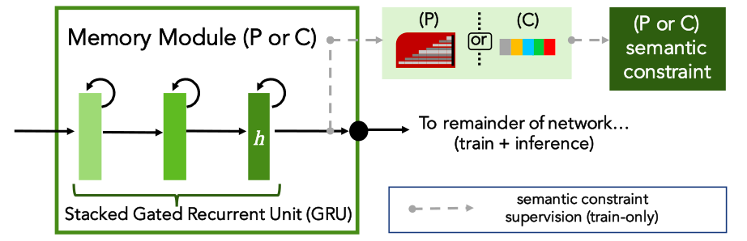
该模块的一个关键：它们在训练过程中受到语义约束(Semantically Constrained)。
循环记忆模块有2个（P和C），分别负责捕捉proposal信息和classification信息。
输入：时间步t的视觉编码器输出φ以及前一个时间步的隐藏状态表示。
输出：最后一个GRU层在该模块中输出的隐藏状态h（如上图）。
输出检测：
输入：前一模块中，2个循环记忆模块的输出特征$h_{prop}$和$h_{cls}$进行连接，得到$h_{det}$。
输出：{起始，结束，分类}
(GTAN)Gaussian Temporal Awareness Networks for Action Localization [2019 CVPR]
movitation
很多方法是通过预先设计的固定的尺寸来生成动作的proposal（比如滑窗法、SSD等），这样做忽略了动作本身的时序结构，限制了检测复杂变化动作的能力。
本文提出，通过引入高斯核来动态优化每个动作提议的时间尺度来解决这个问题。
是一个one-stage方法。两阶段方法将proposal和classification分离可能导致次最优解（sub-optimal solutions）（为什么多阶段方法会影响结果的准确性？）。
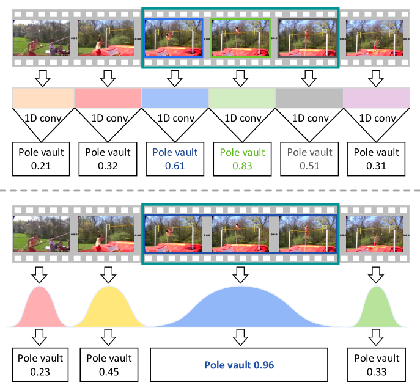
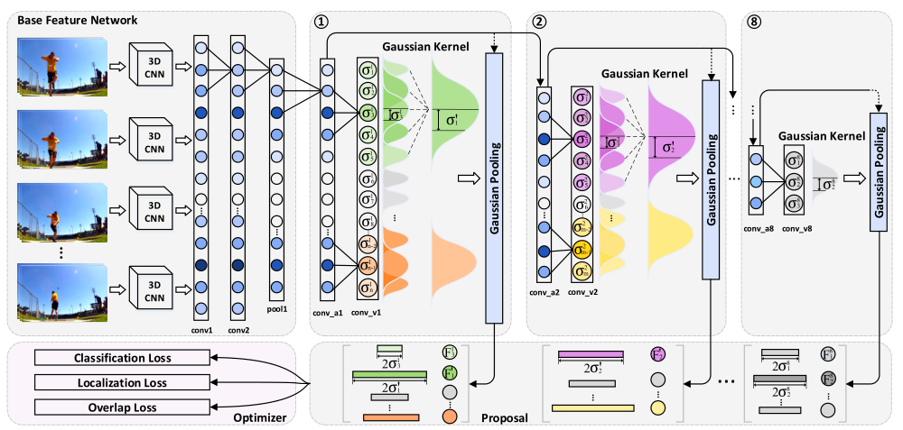
基础特征网络
输入视频帧，通过3D-CNN提取帧级的特征（一个cell），并连接。然后经过两个1D时序卷积和一个max-pooling进一步增加感受野。
高斯核学习
为每个cell生成一个高斯核。具体地，定义feature map为
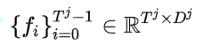
其中 和
为时序长度和特征维度。对于一个proposal
，中间位置为
, 通过一个高斯核
来刻画它的时序尺度。通过一个1D 卷积层来学习标准差
,
可定义如下：
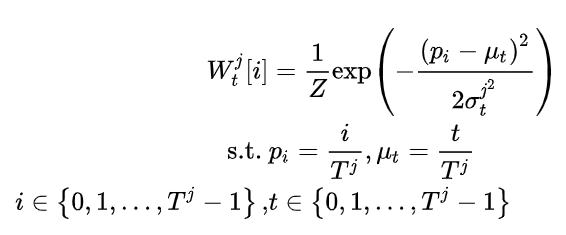
其中， Z为归一化常量。标准差 可以考虑作为高斯核
宽度的测量。然后我们可以通过
来获得时序边界：
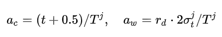
其中 和
为时序边界的中心和宽度。
高斯核合并
如果两个高斯核的IoU大于设定的阈值，则进行合并。
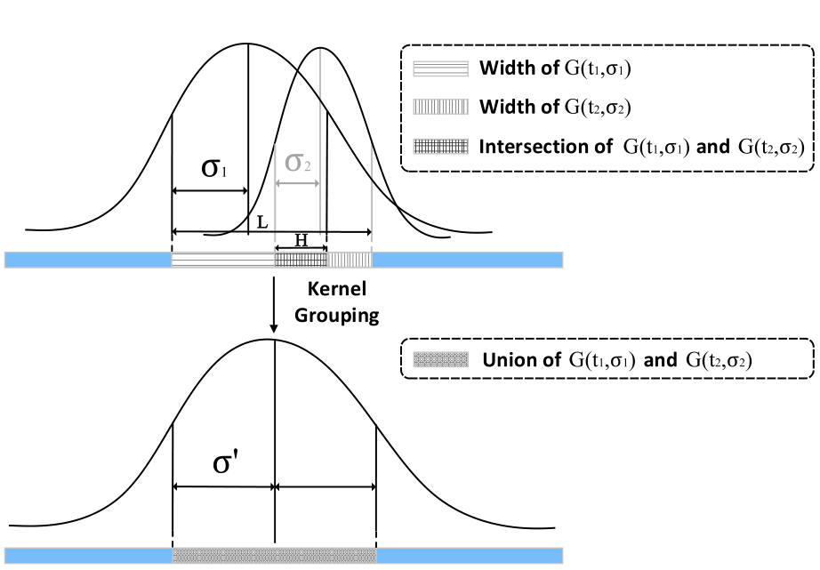
新合并的高斯核如下：
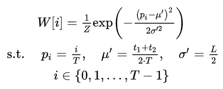
高斯池化
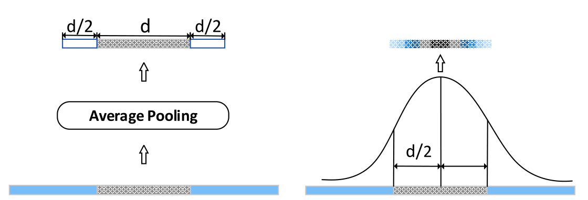
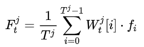
其中 被用于后续的动作识别和时序边界回归。
实验
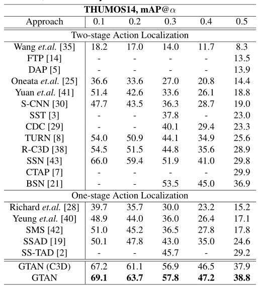
体会
加高斯核的方式有点像加Attention （但是二者有哪些具体的区别？）
很多方法都是共通的。比如在论文Background Modeling中，也提到用高斯核
多阅读多扩宽知识面，更能发现论文的问题